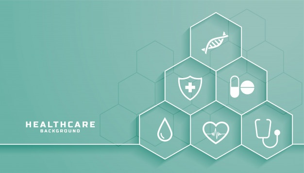

Servicios
TORRE MEDICA CON 90 CONSULTORIOS.
Para facilitar la atención a nuestros pacientes, contamos con una torre independiente al complejo hospitalario, que cuenta con 90 consultorios.
Nuestro prestigiado grupo de médicos abarca todas las especialidades y sub-especialidades requeridas para dar a nuestros pacientes atención de alta complejidad y del más alto profesionalismo.
Este edificio alberga servicios adicionales como restaurante, cafetería y locales comerciales de diversos giros.
- Servicio de ambulancia
- Farmacia 24 horas
- Amplio estacionamiento
- Cafeteria
- Capilla
- Cajero automatico
- Internet inalámbrico en todo el Hospital